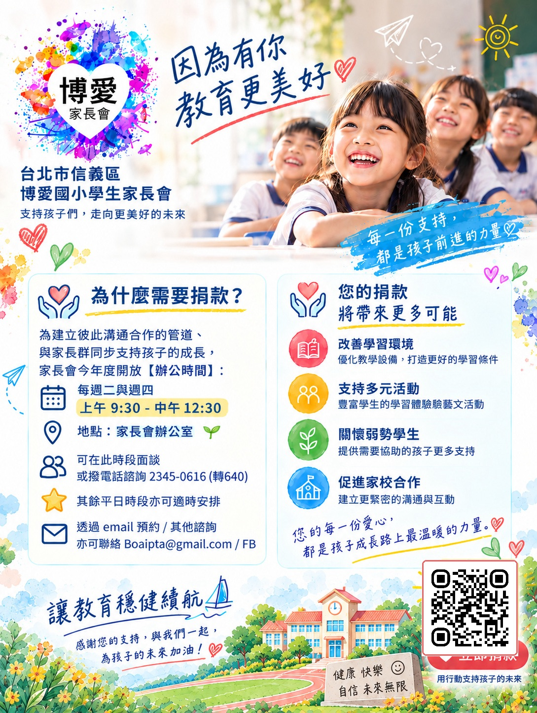

115 學年博愛國小家長會第一次會員代表大會
召開 115 學年度第一次會員代表大會，討論家長會會務與相關提案。

主視覺為 AI 生成示意圖，非真實校園照片。
公布欄
法規章程
臺北市信義區博愛國民小學學生家長會組織章程 95學年度第一次會員代表大會通過(95年9月28日) 114學年度第二次會員代表大會修正通過（115年3月20日） 第一章 總 則 本章程依據臺北市中小學校學生家長會設置自治條例訂定之。 本會名稱定為「臺北市信義區博愛國民小學學生家長會」（以下簡稱本會）。 本會宗旨如下： 維護家長教育參與權之行使。 保障本市學生在中小學校學習與受教育權益。 增進家庭、學校與社區之聯繫與合作，共謀良好教育之發展。 本會會址設於學校，由在學學生家長組成之。 前項所稱家長為學生之法定代理人。 學校應於每學年開學後十四天內，將學生家長之姓名電話送本會，以利連繫會務。 第二章 組織與任務 本會依其組織與任務，設班級學生家長會、會員代表大會、家長委員會及常務委員會；另得組成志工服務團。會員代表大會為家長會最高決策組織。會員代表大會閉會期間，由家長委員會代行職權。 班級家長會任務如下： 一、參與學校班級教育事務，並提供改進建議事項。 二、提案並執行會員代表大會及家長委員會之決議事項。 三、每班推選班級代表二人，出席會員代表大會，其推選得以通訊方式行之。通訊選舉辦法另定之。 四、其他有關事項。 前項第三款之班級代表，任期一學年，連選得連任。 會員代表大會任務如下： 一、研討參與學校推展教育及提供改進建議事項。 二、審議家長會組織章程。 三、審議會務計畫，收支預、決算案。 四、選舉及罷免家長委員會委員、會長、副會長。 五、選派代表參與學校各種依法令必須參與之委員會會議及執行教育法令明定家長會之職權。 家長委員會置委員二十九人，候補委員十人，由會員代表大會就會員代表中選舉組成之。每張選票至多圈選十位，超過十位為廢票。 學校有特殊教育學生者，於前項委員總額內置一人為特殊教育學生家長 ；學校附設幼稚園者，應有幼教班班級代表一人為委員；每校原住民學 生超過五人者，由原住民家長互推一人列席。 前項家長會委員，任期一學年，連選得連任。 常務委員會置常務委員九人，由委員互選組成之，負責執行家長委員會經常性會務，會長及副會長應為當然常務委員。常務委員會開會時由會長擔任主席，可否同數時取決於會長。 家長委員出缺時，依次由候補委員遞補至原任期屆滿為止。 本會置會長一人，副會長三人，由會員代表大會全體會員就家長委員中選舉之。 會長、副會長任期一學年，以連任一次為限。 家長委員會任務如下： 一、參與學校教育發展及提供改進建議事項。 二、推動家長會會務及會員代表大會交辦事項。 三、審議會員及會員代表之大會提案。 四、依會務發展之需要，得設若干工作小組。 五、研擬會務計畫及收支預算案，報告會務及收支事項。 六、協助學校處理重大偶發事件及學校、教師、學生、家長間之爭議。 七、協助辦理親職教育及親師活動促進家長之成長及親師合作關係。 八、選舉及罷免常務委員及遴聘顧問。 九、執行家長會組織章程所規訂定之事項。 常務委員會任務如下： 一、參與學校教育發展及提供建議改進事項。 二、執行家長委員會經常性會務及交辦事項。 三、協助學校處理重大偶發事件及學校、教師、學生、家長間之爭議。 四、協助辦理親職教育及親師活動促進家長之成長及親師合作關係。 五、執行家長會組織章程所規訂之事項。 第三章 會員 本會會員之權利如下： 一、班級家長會出席權、發言權、提案權及表決權。 二、班級代表選舉權、罷免權及被選舉權。 三、參與本會所舉辦之活動。 四、分享本會所提供之服務。 本會會員之義務如下： 一、繳納會費。 二、遵守本會章程、有關規章及各項決議。 三、宣揚本會宗旨，推行本會任務。 第四章 會議 每學年第一次班級家長會由班級導師協助於開學後二十一日內召開，召開時由出席家長公推一人擔任主席，並推選出班級家長代表。 各班級導師應列席班級家長會就班級事務與家長溝通。 會員代表大會每一學年期至少召開一次，由原任會長於第一學期開始後三十五日內召開主持之。經家長委員會之決議或會員代表五分之一請求，原任會長應召集臨時會議，並擔任主席。會長因故不能召集或不召集時，其他家長委員得以三分之一以上連署召開之，由家長委員互推一人擔任主席。 召開會員代表大會須有應出席人員三分之一以上之出席，家長委員會須有應出席人員過半數之出席，始得開會；並經出席人員過半數之通過，始得決議；出席人數不足得改開座談會，並以出席人數過半數之同意為假決議。假決議應明確訂定下次會議時間、相關議程，並通知各會員代表及公布於家長會辦公室。 下次會員代表大會對於假決議如仍有全校班級總數三分之一以上會員代表出席並經出席代表過半數之同意，視同有效之決議。 召開會員代表大會或家長委員會因故不能出席時，如須委託他人代行其權利者，限於以書面委託其他會員代表或委員代行其權利，每一人以接受一人之委託為限。 同一人當選不同班級學生家長代表時，其選舉權及表決權以一人計算。 前項之同一人係指夫妻及法定監護人。 家長委員會每學期開會至少二次，應於會長當選後三十日內召開第一次會議，必要時得召開臨時會議，由會長召集並擔任主席。但會長因故不能召集或不召集時，其他家長委員得以三分之一以上連署召開之，由家長委員互推一人擔任主席。 會員代表大會及家長委員會開會時，校長、處室主任及教師受邀應列席。 家長會當屆第一次會員代表大會由原任會長召集，並擔任主席；惟會中推選下列參與各項學校會議之代表時，應由原任會長與新任會長共同主持會議： 學校教師評審委員會代表。 學校課程發展委員會代表。 學生申訴評議委員會代表。 其他依本市自治條例第八條選派代表。 前項各類代表應依代表類別出席或列席會議，並應有候補代表。 第五章 經費及會計 本會得以學生家長為單位，每學期收繳一次會費。但低收入戶者免繳。 前項收繳金額，由臺北市政府教育局定之。 本會費得委託學校代收，學校代收後交本會管理。 本會應置出納、會計人員，辦理財務會計等事項；非經會員代表大會決議，不得對外募捐。 前項募捐，應採自由捐獻，不得強迫。 本會經費，應在本市公民營金融機構設立家長會專戶存儲，其收支應編列財務報告表於家長委員會及會員代表大會報告，並於會長改選後七日內辦理移交。 前項會費收支及憑證，臺北市政府教育局必要時得隨時抽查。 第六章 附則 本會為辦理日常業務，置秘書、會計各一人及幹事若干人，由會長提名 經家長委員會通過後聘任之。 本會工作小組簡則由家長委員會另訂。 本會財務處理辦法、家長會選舉罷免辦法、志工組織運作辦法及家長會 議事規則，依主管機關訂頒之相關法令辦理。 學校如因舉辦學生員生福利事項或學校未編列預算之其他事項或有關 學校發展之校務活動，需要本會支援經費時，為利本會之運作，應向會 員代表大會提出計畫、預算及學校相關預算編列或會計文件，經會員代 表大會通過後，始可執行。 本章程若有未定事項，依相關法令辦理。如相關法令修改時，本章程隨 同修改並適用修改後之規定。 本會解散後其財產歸學校所有。 本組織章程家長會得自行斟酌修訂之，並經會員代表大會通過於每屆會 員代表大會開會後三十日內，報請臺北市政府教育局核備後實施。
臺北市信義區博愛國民小學學生家長會選舉罷免辦法
九十一學年第一學期第一次學生家長會會員代表大會決議（九十一年十月四日）
交由委員會審議通過（九十一年十月二十五日）
九十六學年度第一學期第一次學生家長會會員代表大會修正通過(九十六年九月二十八日
一百零九年學年度第一次會員代表大會修正通過(一百零九年九月二十六)
臺北市信義區博愛國民小學學生家長會 (以下簡稱本會)為使本會永續發展並建立本會會務人員選舉及罷免運作方式，依據臺北市中小學校學生家長會設置自治條例第四條、臺北市中小學校學生家長會設置及運作監督暫行要點或準則及本會組織章程第二十四條訂定本辦法。
班級家長代表選舉如採通訊選舉，應本公開、透明之原則，為達普遍徵詢學生家長之意願，本會應協同學校及各班導師應於開學後二十一日內以書面徵詢學生家長之意願，不得遺漏。
導師依據家長回覆之意願送交本會選監人員按全班人數製作選舉票，並於選舉票上會同選監人員簽章，發送全班學生家長，不得遺漏。
選舉票應密封寄（執）回。選舉票經寄（執）回後，應即投入票匭。
前項選舉票應載明寄（執）回截止日期。截止日期應於開學後二十八日內。
通訊選舉之開票，應有選監人員參加。如選監人員尚未選舉產生時，則由家長會派遣代表，並由學校人員代表共同開票、監票。
通訊選舉如未於指定日期前將選票寄回，視為廢票。
本會會長、副會長、家長委員、常務委員及相關候補應選名額依本會組織章程規定辦理。
本會舉辦選舉之程序如後：
一、主席宣佈選舉名稱、職位、應選出之名額及選舉方法。
二、進行候選人提名。
三、推派辦理選舉人員，包括監票員、唱票員及記票員5-9人並應包
含學校人員。
四、主席清點出席人數及選票數報告大會。
五、本選舉投票亦可運用電子線上選舉系統投票。
六、當場開票並宣布選舉結果。
同一人不得同時為本會會長及副會長之候選人。
本會之選舉，凡具有備選舉資格者，均得為當選人。
前項當選人，不以親自出席會議者為限。
本會班級家長代表通訊選舉以無記名單記法行之。
家長委員之選舉由本會會員代表就會員代表中以無記名連記法行之。
會長、副會長之選舉由本會會員代表就委員中以無記名連記法行之。
常務委員之選舉由家長委員就委員中以無記名連記法行之。
本會會長、副會長及家長委員會委員之選舉按應選名額以候選人得票較多數者為當選。得票數相同者由候選人當場以抽籤決定之。
候選人不在場時由主席代為抽籤。
會長因其子女於學期中轉學、休學、輟學等因素離校或因故請辭，自其子女離校日或辭職生效日起，若所賸任期不足二個月者，其代理人選由副會長互推一人代理之。若所賸會期超過二個月者，應於其子女離校日或辭職生效日起十五日內，其他家長委員得以三分之一以上連署或由資深或高年級副會長另行召集臨時會員代表大會，並由家長委員互推一人擔任主席補選之，惟其任期以補足至原任期屆滿為止。
會長之請辭，應向家長委員會提出請辭同意書，並經家長委員會委員二分之一以上出席，出席人數二分之一以上同意生效後，家長會應於十五日內檢送請辭同意書及切結書報請教育局備查。
副會長及常務委員之辭職，應向會長提出請辭同意書，並經全體家長委員會委員三分之一以上同意始可辭職，其職位出缺時，不另行補選。
改選、補選之會長，應報經教育局核備後，方得行使職權。
家長委員會委員之請辭應向會長提出請辭同意書，並經全體家長委員會委員三分之一以上同意，始可辭職，並於辭職生效日起十日內，依候補委員順序遞補至原任期屆滿為止。
會長、副會長無故不親自出席應出席會議達二次以上者，視同辭職，並經家長委員會委員二分之一以上出席，出席人數二分之一以上同意後生效，由家長會以書面文件經家長委員會委員三人以上署名通知之，同時於通知時報請教育局備查。
常務委員、委員無故不出席應出席會議達二次以上者，視同辭職，由家長會通知之。
第一項應出席會議係指會員代表大會、家長委員會及常務委員會會議。
第一項所稱無故不出席會議係指經合法通知而未依規定程序於會前向會員代表大會、家長委員會、常務委員會辦理請假手續者。但其於會議當天因突發事故致未請假，於會議後三日內提出不克出席之正當理由證明者，不在此限。
本會會長、副會長及委員應依照法令、本會章程及本會決議執行職務。
違反前項規定或假借本會名義從事私人事宜致本會受有損害者，除對本會負賠償責任外，本會得依前開要點或準則、及本辦法第二十條程序罷免其當選資格。
本會舉辦罷免之程序如後：
一、會長、副會長之罷免案，經會員代表大會總額五分之一以上會員代表連署或提議時，應即通知家長會及學校，並以通知時間明定召開之順序，由連署或提議之會員代表召開臨時會員代表大會，並由家長委員互推一人擔任主席，依本市自治條例第十四條規定程序決議後，會員代表大會應為罷免案成立之通知，並自教育局核准日起二十日內，應召開會員代表大會臨時會議，由家長委員互推一名擔任主席，補選會長，惟其任期均以補足至原任期屆滿為止，副會長不另行補選。
二、委員之罷免：本會委員總額五分之一以上或會員代表總額五分之一以上連署或提議時，經會員代表大會或會員代表臨時會決議罷免之。
三、常務委員之罷免：本會委員總額五分之一以上連署經家長委員會決議罷免之。
本辦法未盡事項依有關法令規定辦理。
本選舉罷免辦法經會員代表大會通過後實施，修訂時亦同。
臺北市信義區博愛國民小學學生家長會財務處理辦法 91學年第一學期第一次學生家長會會員代表大會決議（九十一年十月四日） 交由學生家長會委員會審議通過（九十一年十月二十五日） 95學年度第一學期第一次學生家長會會員代表大會修正通過(95年9月28日) 臺北市信義區博愛國民小學學生家長會（以下簡稱本會）為提供家長會財務收支妥善管理與運用，有效執行各項會務及活動計劃，依據臺北市中小學校學生家長會設置自治條例第四條、臺北市中小學校學生家長會設置及運作監督準則及本會組織章程第二十四條之相關規定，訂定本辦法。 第二條 本會財務收入項目包含： 一、家長會費。 二、各界捐款。 三、政府及其它補助款。 四、家長會專案活動結餘。 五、代收代管費用。 六、孳息及其他收入。 學校代收之家長會費應於收得後三十日內交家長會管理。 第三條 本會財務支出項目如下： 一、本會辦公及會議支出。 二、本會會訊支出。 三、本會活動支出。 四、志工裝備補助及獎勵。 五、獎助師生參與校內外各類教育活動經費及優良成果。 六、補助學校急難性軟、硬體設施之改善。 七、代支代管專款費用。 八、預備金。 九、其他經會員代表大會或家長委員會議決事項之費用。 本會每學年應就本辦法訂定之收入及支出項目，編列當年度經費收支預 算決算表，送本會會員代表大會或家長委員會審議通過後，據以運用本 會經費。 第五條 本會財務支出運用及審核程序如下： 一、凡申請金額在新台幣一萬元以內者，由會長核可。 二、凡申請金額超過新台幣一萬元未滿三萬元者，經常務委員會議決通過後，由會長核定。 三、凡申請金額超過新台幣三萬元者，經家長委員會議決通過後，由會長核定。 但特殊臨時性支出，得於預算收支有結餘時，提出申請，其審核程序同上；但亦得經會員代表大會議決通過特定收支後實施。 第六條 本會財務收支之管理及監督如下： 本會財務應由當屆會長及會計共同具名，以本會名義在本市金融機構設立家長會專戶存儲，並於每學年會長改選後七日內，辦理財務移交。 本會應製發連號裝訂三聯式收據本，憑以入帳財務收入。 出納、會計人員應定期編列家長會財務收支報表，向家長委員會及會員代表大會報告，並公布全體家長周知。 四、各項財務收支之整理，應符合一般會計原則，其單據及帳目記錄，至少應保存三年。 家長會出納、會計人員於每任會長任期屆滿前二十日內，應將財務移交報告、主要財產目錄、現金出納表及相關帳冊各一式四份送交家長委員會查核後，提交下次會員代表大會審議，經會員代表大會通過後，由會長移交下任會長一份、自存一份、家長會及學校各留存一份。 本辦法未盡事宜，依相關法令辦理。 本財務處理辦法經會員代表大會通過並報請台北市政府教育局核備後實施，修訂時亦同。 PAGE
臺北市信義區博愛國民小學學生家長會志工組織運作辦法 91學年第一學期第一次學生家長會會員代表大會決議（91年10月4日） 交由學生家長會委員會審議通過（91年10月25日） 95學年度第一學期第一次學生家長會會員代表大會修正通過（95年9月28日） 102學年度第一學期第一次學生家長會委員會組別增加修正通過（102年10月24日） 109學年度第一次會員代表大會修正通過（109年9月26日） 114學年度第二次會員代表大會修正通過（115年3月20日） 第一條 本志工組織辦法依據臺北市中小學校學生家長會設置自治條例第二十二條訂定之。 第二條 本校志工組織定名為 『臺北市信義區博愛國民小學家長會志工服務團』（以下簡稱本團）。 第三條 本團以促使社區家長利用閒暇參與學生教育行動，發揮幼吾幼以及人之幼的崇高理念，並協助學校推動校務為宗旨。 第四條 本團隸屬於臺北市信義區博愛國民小學學生家長會，團址設在家長會辦公室，並接受其指揮及監督。 第五條 本團並得置顧問若干人，置團長一人，另置副團長二人、組長若干人。顧問由團長聘任之。本團得依任務需要設各組，各組置組長一人，任期一年，連選得連任一次。 本團及各組之施行細則由家長會另定之。 第一組 交通導護組。 第五組 圖書管理組。 第二組 愛心陪讀組。 第六組 週二晨光組。 第三組 衛生保健組。 第七組 校園綠化組。 第四組 資源利用組。 第六條 本團以團員大會家長代表大會為最高決策組織，幹部會議本團為執行單位。幹部會議的成員為團長、副團長、組長、小組長。組員大會及幹部會議經出席人員多數之通過，始得決議。會議由團長召集並擔任主席。 第七條 團長對內主持會議、綜理團務、指揮本團所有組員及所屬各項工作。組長依照團長指導、協助團長執行團務，必要時得自行遴選組員，以完成交付事項。 第八條 各組於開學後，由各組召開新志工募集說明聯誼會，開會時各組組長擔任主席，隸屬及輔導單位應派員列席。 第九條 團員大會每學年配合家長會改組後召開，但得經幹部會議之決議或團員五分之一請求，召開臨時會議。 第十條 凡具有高度熱忱與服務精神者，經幹部會議通過，得加入本團為本團團員。 第十一條 本團團組員之權利如下： 一、發言權及表決權。 二、選舉權、罷免權及被選舉權。 三、參與本團或隸屬單位與有關單位所舉辦之各種聯誼及活動。 第十二條 本團團員之義務如下： 一、遵守隸屬單位之有關規章及各項決議。 二、遵守本團組織章程及各項決議。 三、執行本團或隸屬單位分配之服務工作。 四、出席本團或隸屬單位規定應參加之各種會議。 五、參與推展各項志願服務活動。 第十三條 團員大會職權如下： 一、研討協助學校推展教育及提供改進建議事項。 二、討論團員之提案。 三、審查團務報告及決議事項。 四、通過年度服務計畫及發展方向。 五、選舉或罷免團長及組長。 六、其他重大事項之決定。 第十四條 幹部會議之職權如下： 一、審查團員入團及除名事項。 二、研擬團員大會之提案。 三、處理團員大會之決議及交辦事項。 四、擬定年度計畫及專案服務方案。 五、辦理本團福利及各項權益。 六、其他應執行事項。 第十五條 本團團員有下列情形之一者得經幹部會議之決議停權或除名： 一、違反隸屬單位有關規章及各項決議者。 二、違反本團組織章程及各項決議者。 三、其個人行為妨害隸屬單位及本團名譽者。 四、連續一個月未參與服務工作者。 第十六條 本團經費之來源由家長會及社會人士捐助，團員遇急難需救助時由團員自由樂捐。本團經費管理由家長會統籌辦理。文書處理及活動策劃由家長會支援。為有利團務發展，由團長召集，副團長，各組組長協助相關活動計畫與推展校內或社區招募熱心人士，若有團務經費需求，得依家長會財務處理辦法第三條第四項或第九項, 代表志工團報請會員代表大會或家長委員會議決議後動支。 第十七條 本組織運作辦法若有未定事項依相關規定辦理，如相關法令修改時，本組織運作辦法亦隨同修改，並適用修改後之規定。 第十八條 本組織運作辦法經會員代表大會通過並報請台北市政府教育局核備後實施，修訂時亦同。 臺北市信義區博愛國民小學家長會志工團施行細則 總則 第一條 本志工服務團施行細則依據台北市信義區博愛國民小學家長會志工組識運作辦法訂定之。 第二條 本團定名為台北市信義區博愛國民小學家長會志工服務團以下簡稱本團。 第三條 本團以促使學生家長及社區熱心人士利用空閒,參與學童教育行動,協助學校推動校務為目的;以發揮幼吾幼以及人之幼的精神,並遵守不計酬勞、不求回報的志工服務倫理。 第四條 本團團址設於台北市信義區博愛國民小學家長會。 第二章 組織及團員 第五條 凡具有高度熱忱與服務精神者,得志願加入本團為團員。 第六條 本團設團長一人,副團長二人,於每年十月舉行之團員大會於選(推)舉產生;任期一年至隔年十月底,連選得連任一次,唯團長、副團長需為博愛國小學生家長,且加入志工團二年以上年資，方具被選舉人資格。 第七條 團長對內主持會議,綜理團務,對外並代表本團處理相關事宜。 第八條 副團長協助團長處理團務,負責團員大會決議事項之執行,必要時得代理團長職務。 第九條 本團服務小組組別、工作職掌如後(如附表一) 第十條 以上各組設組長一人、小組長若干人,被選人為博愛國小學生家長，連選得連任，由各組成員自行推選。組長負責各組工作之計劃與推展。於每學年度初及新生家長座談會實施志工招募並邀請相關單位列席說明。 第十一條 為有利團務發展另設二行政編組---研修組、活動組.由團長、副團長分別兼任組長、副組長，各組組長為當然組員協助相關活動計劃與推展。 第十二條 本團團員權利如下: 一、發言權與表決權。 二、選舉、罷免與被選舉權。 三、參與本團或隸屬單位與有關單位之各種研修、聯誼活動。 四、出席本團或隸屬單位之相關會議。 五、參與、推展各項志願服務活動。 第十三條 本團團員之義務如下: 一、遵守隸屬單位之有關規章及各項決議。 二、遵守本團組織章程及各項決議。 三、執行本團或隸屬單位分配之服務工作。 四、出席本團或隸屬單位之相關會議。 五、參與、推展各項志願服務活動。 第十四條 團務大會職權如下: 一、研討協助學校推展教育及提供改進建議事項。 二、討論團員之提案。 三、審查各組業務報告及決議事項。 四、通過年度服務計劃及發展方向。 五、選舉或罷免團長、副團長及組長。 六、其他重大事項之決定。 第十五條 幹部會議職權如下: 審查團員除名事項。 研擬團務大會之提案。 處理團務大會之決議及交辦事項; 擬定年度服務計劃及發展方向。 辦理本團福利及各項權益。 其他應執行事項。 第十六條 本團團員有下列情形之一者得經幹部會議之決議停權或除名 違反隸屬單位之有關規章及各項決議。 二、違反本團組織章程及各項決議。 三、其個人行為妨害隸屬單位及本團名譽者。 四、無故連續一個月未參與服務工作者。 會 議 第十七條 本團每學期應召開一至二次團員大會暨工作分享座談會,由團長召集,並擔任主席。會議中,各組組長均應出席並提出工作執行情形報告;各團員得提出有關建設性、改造性之建議,由大會討論並做成決議。本會議得邀請校長、家長會長及相關處室主任列席。 第十八條 本團團長、副團長及各組組長每月召開團務會議一次,會議由團長召集,並擔任主席。 本會議得邀請校長、家長會長及相關處室主任列席。 第十九條 本團、各組得依實際需要,與學校相關處室召開協商或聯誼會。 第二十條 團員不能親自出席大會時.得以書面委託其他團員代理，每一團員以代理一人為限。 第二十一條 本團以團務大會為最高決策組織，幹部會議為執行單位。大會之各項決議.以會員過半數出席，出席人數較多數之同意行之。但下列之決議以出席人數三分之二同意之: 章程之訂定與變更。 團體解散。 其他與會員權利義務有關之重大事項。 經費 第二十二條 本團若有經費需求，應於學年初向家長會提出年度預算計劃案,經家長會通過後執行或由社區人士捐助;學校更提供文書處理、活動策劃、經費支援之適當配合。 第二十三條 本團經費收支,應造具收支明細報告表,於團員會議時公告。並應於期未時向家長會提出執行情形報告。 附則 第二十四條 本章程未規定事項，悉依有關法令規定辦理。 第二十五條 本章程經團務大會通過，提報家長會核備後施行，變更時亦同。 臺北市信義區博愛國民小學家長會志工團工作執掌 組 別 工 作 內 容 服 務 時 間 協 調 處 室 交通導護組 於上下學時間值勤交通路口，協助維護學童安全。 07:20--08:00 12:00--12:40 16:00--16:40 學務處 生教組 愛心陪讀組 協助輔導各年級國語科學習遲緩學童。 與各處組協調後另訂之 輔導室 輔導組 衛生保健組 協助學生潔牙、視力保健、簡易急救。 學務處 衛生組 資源利用組 協助學校資源回收之分類整理。 協助學校推廣環保教育，做各項宣導活動。 學務處 衛生組 圖書管理組 整理圖書及修補破損書籍。 協助辦理圖書借還作業。 教務處 設備組 週二晨光組 推行唐詩百首背誦活動。 教務處 校園綠化組 1.整理植栽 2.協助除草 3.種植花木 4.各樓層花台美化 總務處 附註：本團依需求全力支援校內各大型活動。 PAGE 15 15
臺北市信義區博愛國民小學學生家長會議事規則 九十一學年第一學期第一次學生家長會會員代表大會決議（91年10月4日） 交由學生家長會委員會審議通過(91年10月25日) 九十五學年度第一學期第一次學生家長會會員代表大會修正通過(95年9月28日) 壹、提案： 一、一般提案應先經主席徵求一人以上之附議後成立。 二、章程修正案應先經三人提案以書面向主席提出。 貳、表決： 會員代表大會之開會及決議依臺北市中小學校學生家長會設置自治條例第九條、第三章及臺北市中小學校學生家長會設置及運作監督準則等相關規定辦理。 參、發言： 一、發言應經主席同意取得發言權。 二、每人發言時間不得超過三分鐘，時間終了無論發言是否完畢應即停止發言，由主席點名下一位發言人發言。 三、發言內容儘量扼要簡明，勿作人身攻擊或侮罵諷刺，保持理性、和氣態度。 四、發言不限一次，但有兩人以上同時要求發言時，尚未發言者優先發言。 五、發言人不聽主席制止或不服從大會主席之裁決時，由主席裁決喪失發言權。 六、因時間限制，大會主席裁決終止發言時，尚未發言者不得發言，但可補提書面意見供大會參酌。 肆、本議事規則若有未盡事宜，依內政部會議規範原則處理。 伍、本議事規則經家長會會員代表大會通過後實施，修訂時亦同。 PAGE
經費公開

連結已保留，待 2026 年 9 月 18 日會議投票通過並正式啟動後開放。
會議紀錄
召開 115 學年度第一次會員代表大會，討論家長會會務與相關提案。
建立線上提案與定期回覆摘要，公告收件狀態、處理窗口與後續進度。
整理家長可支援的時段與專長，協助園遊會、畢業典禮、校園安全宣導等活動。
歷年活動
家長會近期活動將持續彙整公告，並保留過去公開可查的活動紀錄。
交通導護中午與下午時段目前最需要人手，陪讀、圖書、環保、衛生與校園綠化服務同步招募中。
填寫志工意願活動回顧
以下整理目前網路可查到的臺北市信義區博愛國小家長會活動脈絡。
公開年度會務方向、組織分工、預算規劃與家長提案處理方式。
整理志工分工、攤位支援、活動收入支出、結餘用途與感謝名單。
記錄場地協助、禮品採購、志工人力、經費來源與活動照片。
以月報方式整理收入、指定用途、支出科目、憑證狀態與結餘。
校園社團與學生團隊
本頁彙整博愛國小學生社群與公開可查的社團、團隊資訊。社團名單、年級限制、費用與甄選方式每學期可能調整，實際內容以學校公告與報名系統為準。
公開資訊顯示，博愛國小弦樂團為學校重點發展社團之一，曾舉辦「弦動風起 童話之聲」音樂會，並結合音樂劇與 AI 科技元素。
看弦樂團臉書舊站資料保留管樂團介紹、師資、樂器、班別、報名、演出紀錄、相片與影音紀錄等欄位，提供家長查詢團隊資訊。
看管樂團臉書公開舊站介紹提到，博愛國小籃球隊重視基本動作、團隊合作與態度養成；社團報名系統也曾列有週一籃球班等課後社團。
看籃球隊介紹童軍團透過戶外活動、團隊合作與服務學習，培養孩子的自理能力、責任感與群體精神。
看童軍團介紹扯鈴隊訓練節奏、手眼協調與舞台表現，相關練習與招生資訊請依學校公告為準。
合唱團培養歌唱基礎、聲部合作與展演經驗，參與方式請留意學校公告與團隊通知。
羽球隊重視基礎動作、體能與團隊紀律，練習時間與招募方式以學校公告為準。
田徑隊提供跑、跳、擲等基礎訓練與競賽參與機會，相關資訊請依學校公告確認。
溜冰隊培養平衡、速度與專注力，招生、練習與裝備需求請以學校公告為準。
選擇參考
弦樂團、管樂團與校隊型團隊通常安排固定練習、演出或比賽，適合長期投入。
課後社團適合興趣探索與多元體驗，報名前請確認課程時間、收費方式與接送安排。
家長可協助接送、練習時間安排與器材準備；活動、展演或比賽如需支援，將另行公告。
特色課程
整理校本課程與延伸學習工具，提供家長了解孩子在校園中的學習主題與探索方向。
博愛國小以城市學習為核心，帶領孩子從校園出發，認識臺北的街區、建築、生活與未來想像。
博愛國小家長會社群
提供剛入學及低年級家庭交流接送提醒、校園生活適應、閱讀陪伴、志工資訊與親師溝通常見問題。
提供中年級家庭交流學習習慣、社團選擇、活動支援、校園生活與家長會參與方式。
提供高年級與即將銜接國中的家庭交流畢業活動、校隊與社團投入、自治參與、升學銜接與大型活動支援。
適合發布：活動提醒、志工招募、公開公告連結、失物招領提醒、家長會公開資訊。
不適合發布：學生姓名與照片、個別爭議、未確認消息、私人聯絡資料、可能造成誤解的截圖。
當週活動與導護時段提醒
各年級校園生活注意事項
閱讀、社團與活動參與經驗交流
可整理至家長會公開頁的共通資訊
志工團組別
於上下學時間值勤交通路口，協助維護學童安全。
協助輔導各年級國語科學習需要更多支持的學童。
協助學生潔牙、視力保健與簡易急救，支援校園健康照護工作。
協助資源回收分類整理，並配合學校推廣環保教育與宣導活動。
整理圖書、修補破損書籍，並協助辦理圖書借還作業。
推行唐詩百首背誦活動，陪孩子在晨光時間練習朗讀與背讀。
整理植栽、協助除草、種植花木，並美化各樓層花台。
我要參與
請簡要說明反映事項或建議內容，並留下可聯絡方式。家長會收到來信後將由窗口回覆；涉及學生個資或個別事件時，將以保護孩子與家庭隱私為優先。
表單會開啟 Email App，寄到 boaipta@gmail.com，寄件備份會保留於寄件者信箱。